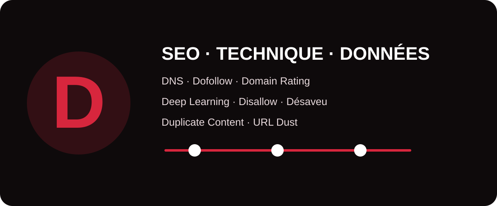

Le référencement naturel combine des notions de liens, d’infrastructure, d’intelligence artificielle et de gestion des URL. Ce glossaire MinoSeo transforme ces termes parfois techniques en définitions accessibles et directement exploitables, afin d’aider les décideurs et équipes marketing à mieux comprendre les recommandations d’un audit SEO.

Dofollow
Le terme dofollow est couramment utilisé en SEO pour désigner un lien standard qui ne comporte pas d’attribut demandant aux moteurs de traiter la relation d’une manière particulière, comme nofollow, sponsored ou ugc. Il n’existe donc pas d’attribut HTML rel="dofollow" nécessaire : un lien classique est simplement un lien.
Dans une stratégie de netlinking, l’enjeu n’est pas seulement d’obtenir des liens dits « dofollow », mais surtout des liens éditorialement pertinents, provenant de pages crédibles et insérés dans un contexte utile au lecteur.
Deep learning
Le Deep Learning, ou apprentissage profond, est une branche du machine learning reposant sur des réseaux de neurones comportant de nombreuses couches de traitement. Ces modèles peuvent apprendre des représentations complexes à partir de grandes quantités de données, notamment pour le langage, les images ou la reconnaissance de motifs.
Pour le SEO et le GEO, cette notion aide à comprendre pourquoi les moteurs modernes ne se limitent plus à faire correspondre mécaniquement des mots-clés : ils cherchent aussi à interpréter le contexte, les relations sémantiques, les entités et l’intention.
DXP
Une DXP (Digital Experience Platform) est une plateforme destinée à gérer et orchestrer l’expérience numérique sur plusieurs canaux : site web, espace client, application, contenus personnalisés ou autres points de contact. Elle peut regrouper CMS, données, personnalisation, analytics et outils marketing.
En SEO, une DXP doit rester maîtrisable techniquement : HTML accessible aux robots, URLs stables, métadonnées éditables, performances correctes, rendu mobile et gouvernance des redirections sont des points à surveiller lors de son déploiement.
Domain Name System DNS
Le Domain Name System (DNS) est le système qui associe un nom de domaine lisible, comme example.com, aux informations techniques permettant d’atteindre le serveur ou les services correspondants. Il fonctionne comme une couche d’aiguillage essentielle d’Internet.
Une erreur DNS peut rendre un site indisponible pour les internautes comme pour les robots d’exploration. Lors d’une migration ou d’un changement d’hébergement, la configuration des enregistrements DNS et leur propagation doivent donc être contrôlées avec attention.
Directive allow
La directive Allow peut être utilisée dans un fichier robots.txt pour autoriser explicitement l’exploration d’un chemin, notamment lorsqu’une règle Disallow plus générale bloque une zone parente. Elle sert ainsi à créer une exception dans les règles d’exploration applicables à un robot compatible.
robots.txt gère principalement l’exploration. Il ne doit pas être utilisé comme unique méthode pour empêcher une URL d’apparaître dans un moteur de recherche.Disallow
La directive Disallow, placée dans robots.txt, indique aux robots concernés les chemins qu’ils ne doivent pas explorer. Elle peut être utile pour limiter le crawl de zones sans intérêt SEO, de certaines combinaisons d’URL ou de ressources spécifiques.
Une mauvaise règle peut toutefois bloquer des pages importantes ou empêcher le moteur de récupérer les ressources nécessaires au rendu. Chaque modification du fichier robots.txt mérite donc d’être testée avant et après mise en production.
Domain Rating
Le Domain Rating (DR) est une métrique propriétaire popularisée par Ahrefs pour estimer la force relative du profil de backlinks d’un domaine sur une échelle donnée. Elle est calculée à partir des données et de la méthodologie de l’outil.
Le DR n’est pas un indicateur officiel de Google et ne doit pas devenir un objectif isolé. Pour comparer des opportunités de netlinking, MinoSeo recommande de le croiser avec la pertinence thématique, le trafic organique, la qualité éditoriale, l’historique du domaine et la nature réelle des pages qui créent les liens.
Désaveu de lien
Le désaveu de liens consiste à transmettre à Google une liste de backlinks que l’on souhaite voir ignorés dans l’évaluation du site. Cette procédure s’adresse à des situations particulières, notamment lorsqu’un profil de liens comporte un volume significatif de liens artificiels ou problématiques qu’il est impossible de faire supprimer.
Ce n’est pas une opération de maintenance à effectuer automatiquement. Une mauvaise utilisation peut conduire à désavouer des liens légitimes. Avant toute action, il convient d’analyser l’origine, le contexte et l’historique des backlinks concernés.
Dust duplicate url
Le terme URL Dust désigne la multiplication d’URLs différentes donnant accès à un contenu identique ou presque identique. Cela peut provenir de paramètres, variantes de casse, slashs, identifiants de session, filtres, protocoles ou chemins alternatifs. Cette « poussière d’URL » peut diluer les signaux, compliquer le crawl et créer des duplications inutiles.
Le traitement combine généralement normalisation des URLs, redirections lorsque nécessaire, liens internes cohérents, canonicals et maîtrise des paramètres. L’objectif est de faire converger les signaux vers les URLs réellement stratégiques.
Densité mots clés
La densité de mots-clés correspond à la fréquence d’apparition d’un mot ou d’une expression par rapport à l’ensemble du texte. Historiquement, certains référenceurs cherchaient un pourcentage « idéal ». Cette approche mécanique est aujourd’hui trop simpliste.
Un contenu performant doit d’abord répondre précisément à l’intention de recherche, utiliser un vocabulaire naturel et couvrir les concepts nécessaires au sujet. Répéter artificiellement une expression peut dégrader la lecture sans apporter de bénéfice SEO. La richesse sémantique et la clarté sont plus utiles qu’un taux arbitraire.
Duplicate content
Le Duplicate Content désigne la présence de contenus identiques ou très similaires sur plusieurs URLs, à l’intérieur d’un même site ou entre plusieurs sites. Sur un site, il peut résulter de variantes d’URL, de filtres, de pages imprimables, de fiches très proches ou de contenus réutilisés sans différenciation suffisante.
La duplication n’implique pas automatiquement une pénalité. En revanche, elle peut compliquer le choix de la version principale, disperser les signaux et gaspiller des ressources d’exploration. Selon le cas, les solutions incluent canonicalisation, redirection, consolidation, réécriture utile ou amélioration du maillage interne.
Synthèse : comment classer ces notions ?
| Famille | Termes | Enjeu SEO |
|---|---|---|
| Liens & autorité | Dofollow, Domain Rating, Désaveu de lien | Évaluer et sécuriser le profil de popularité. |
| Exploration | Allow, Disallow | Orienter efficacement le passage des robots. |
| Infrastructure | DNS, DXP | Garantir accessibilité, stabilité et maîtrise technique. |
| IA | Deep Learning | Comprendre les technologies derrière l’analyse moderne de l’information. |
| Contenu & URLs | URL Dust, densité de mots-clés, Duplicate Content | Éviter la dilution des signaux et améliorer la qualité éditoriale. |
De la définition au diagnostic SEO
Ces notions montrent qu’une stratégie SEO solide ne repose jamais sur un seul levier. La visibilité dépend de la capacité du site à être accessible, compris, correctement structuré et soutenu par des signaux de confiance cohérents. Une erreur DNS, une règle Disallow trop large ou des milliers d’URLs dupliquées peuvent parfois avoir plus d’impact qu’une optimisation éditoriale isolée.
MinoSeo accompagne les entreprises dans l’audit technique, le SEO/GEO, la stratégie de contenu et le netlinking afin de transformer ces concepts en actions prioritaires et mesurables.
Besoin d’identifier les freins SEO de votre site ?
Faites analyser votre architecture, vos contenus, votre indexation et votre profil de liens par MinoSeo.
Demander un audit gratuit